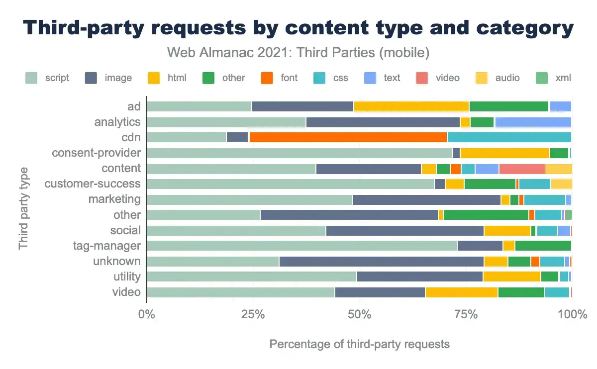
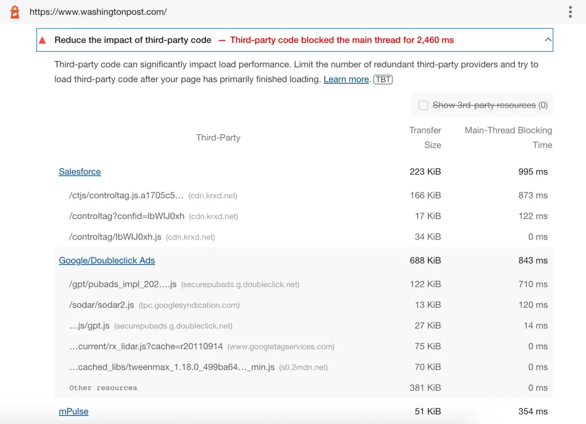
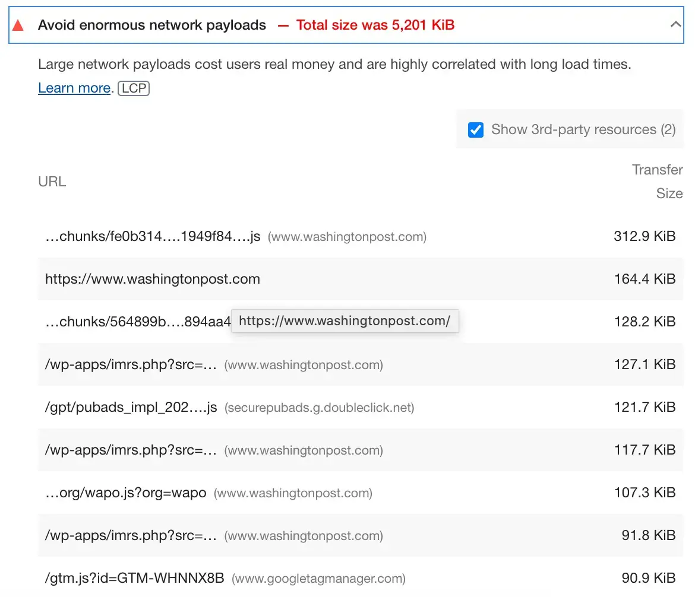
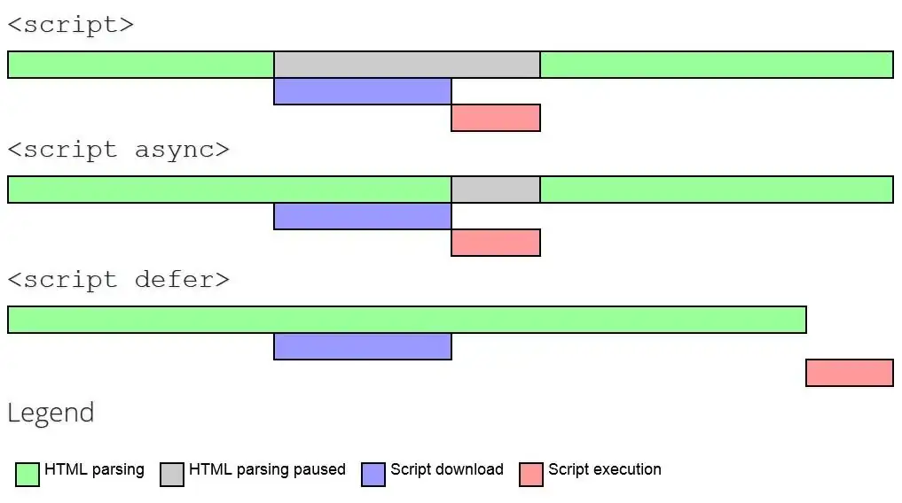

أنماط JavaScript
تحسين تحميل موارد الأطراف الخارجية (Third-party)
tl;dr: يمكن لموارد الأطراف الخارجية (third-party) أن تبطئ المواقع وأن تمثل تحديًا في تحسين الأداء (performance). يمكنك اتباع ممارسات أفضل محددة لتحميل أو تأجيل أنواع مختلفة من الأطراف الخارجية بكفاءة. ويمكنك أيضًا استخدام مكونات على مستوى الإطار مثل Next.js Script component، الذي يوفر قالبًا لتحديد «متى» و«كيف» لتحميل سكربتات الأطراف الخارجية. أو قد تكون الأفكار التجريبية مثل Partytown محل اهتمام.
من الصعب العثور على موقع حديث يعمل في عزلة. يتعايش معظم المواقع ويعتمد على عدة مصادر أخرى على الويب للحصول على البيانات والوظائف والمحتوى وغيرها. أي مورد يقع على نطاق مختلف ويستهلكه موقعك هو مورد من طرف ثالث (3P) بالنسبة إلى موقعك. وتشمل موارد الأطراف الخارجية النموذجية المضمنة في المواقع:
- تضمينات الخرائط والفيديو ووسائل التواصل الاجتماعي وخدمات الدردشة
- الإعلانات
- مكوّنات التحليلات ومديري الوسوم
- سكربتات اختبارات A/B والتخصيص
- مكتبات أدوات تقدم دوالًا مساعدة جاهزة، مثل مكتبات عرض البيانات والرسوم المتحركة.
- reCAPTCHA أو CAPTCHA لاكتشاف الروبوتات.
يمكنك استخدام الأطراف الخارجية لدمج ميزات أخرى تضيف قيمة إلى محتواك أو تقلل بعض المهام المرهقة لبناء موقع من الصفر. ووفق تقرير Web Almanac لعام 2021، يستخدم أكثر من 94% من الصفحات على الويب أطرافًا خارجية؛ وتُعد الصور وJavaScript المساهمين الأكثر أهمية في محتوى الأطراف الخارجية. وفيما يلي تفصيل مفيد لطلبات الأطراف الخارجية حسب نوع المحتوى والفئة:
بينما يمكن للموارد الخارجية إثراء موقعك بميزات قيّمة، يمكنها أيضًا إبطاؤه إذا:
- سببت رحلات ذهاب وإياب إضافية إلى نطاق الطرف الثالث لكل مورد مطلوب.
- استخدمت JavaScript بكثافة عالية (ما يؤثر في زمن التنزيل والتنفيذ) أو كانت ضخمة الحجم بسبب صور أو مقاطع فيديو غير محسّنة.
- لا يستطيع مالكو المواقع التحكم في التنفيذ، وقد يكون سلوكها غير متوقع.
- يمكنها حجب عرض الموارد الحرجة الأخرى في الصفحة والتأثير في Core Web Vitals (CWV).
على الرغم من هذه المشكلات، قد تكون الأطراف الخارجية ضرورية لأعمالك. وإذا لم تستطع التخلص من موارد 3P، فالأفضل التالي هو تحسينها لتقليل تأثيرها على الأداء، وهو ما سنغطيه في هذا القسم.
أدرجنا استراتيجيات وممارسات أفضل تنطبق على أنواع مختلفة من سكربتات الأطراف الخارجية. ويضم مكوّن Next.js Script هذه الممارسات. فلنر أولًا كيف نكتشف تأثير هذه السكربتات في أداء الصفحة.
تقييم تأثير موارد 3P على الأداء
يمكنك استخدام مجموعة من التقنيات لمعرفة كيف تؤثر شيفرة الأطراف الخارجية في موقعك.
-
تساعد عمليات تدقيق Lighthouse على تحديد سكربتات الأطراف الخارجية البطيئة. راجع تقليل تأثير شيفرة الأطراف الخارجية للسكربتات التي تحجب الخيط الرئيسي.
-
تقليل زمن تنفيذ JavaScript للسكربتات التي تستغرق وقتًا طويلًا للتنفيذ
-
تجنب أحجام بيانات الشبكة الهائلة للسكربتات الكبيرة
-
استخدم مخطط شلال Waterfall من WebPageTest (WPT) لتحديد سكربتات الأطراف الخارجية الحاجبة أو مقارنة WPT جنبًا إلى جنب لقياس تأثير وسوم الأطراف الخارجية.
-
تساعد مواقع مثل Bundlephobia على تقييم تكلفة إضافة حزم npm المتاحة إلى حزمك. ويمكنك أيضًا معرفة الحجم والاعتماديات في أي حزمة باستخدام npm package search.
بعد تشخيص شيفرة الأطراف الخارجية المشكلة، فلنستكشف طرق تحسينها.
استراتيجيات التحسين
نظرًا لأن شيفرة الأطراف الخارجية ليست تحت سيطرتك، لا يمكنك تحسين المكتبات مباشرة. وهذا يترك لك خيارين.
- الاستبدال أو الإزالة: إذا كانت القيمة التي توفرها سكربتات الطرف الثالث لا تتناسب مع تكلفة أدائها، ففكر في إزالته. يمكنك أيضًا تقييم بدائل أخرى خفيفة الوزن تقدم وظائف مماثلة. في هذه دراسة حالة، نناقش كيف حسّنا أداء تطبيق أفلام باستبدال الحزم ببدائل أخف وميزات مماثلة.
- تحسين تسلسل التحميل: تتضمن عملية التحميل تحميل عدة موارد من الطرف الأول والطرف الثالث في المتصفح. ولتصميم استراتيجية تحميل مثالية، ستحتاج إلى التفكير في الأولوية التي يخصصها المتصفح للموارد المختلفة، ومواضعها في الصفحة، وقيمة كل مورد لصفحة الويب. وقد اقترحنا تسلسل تحميل مثاليًا لتطبيق React/Next.js. سنرى الآن كيف ينطبق ذلك على موارد الأطراف المختلفة والخطوات التي يمكننا اتخاذها لتحميلها على النحو الأمثل.
تحميل سكربتات 3P بكفاءة
فيما يلي ممارسات أفضل مجرَّب على مر الزمن يمكن أن تقلل تأثير موارد الأطراف الخارجية على الأداء عند استخدامها بشكل صحيح.
استخدم async أو defer لمنع السكربتات من حجب المحتوى الآخر.
ينطبق على: السكربتات غير الحرجة (مديرو الوسوم والتحليلات)
تنزيل وتنفيذ JavaScript متزامن افتراضيًا، وقد يحجب محلّل HTML وبناء DOM على الخيط الرئيسي. استخدام سمتي async أو defer في عنصر `` يخبر المتصفح بتنزيل السكربتات بصورة غير متزامنة. يمكنك استخدامهما لتنزيل أي سكربت ليس ضروريًا لمسار العرض الحرج (مثل المكوّن الرئيسي لواجهة المستخدم).
defer: يُجلب السكربت بالتوازي أثناء تنفيذ المحلل، ويؤجل تنفيذ السكربت حتى اكتمال التحليل. يجب أن يكونdeferالخيار الافتراضي لتأجيل التنفيذ حتى بعد بناء DOM.async: يُجلب السكربت بالتوازي وينفَّذ فور توفره. تُنفَّذ سكربتات الوحدات ذات الاعتماديات في طابورdefer. استخدمasyncللسكربتات التي يجب أن تعمل مبكرًا.
<script src="https://example.com/deferthis.js" defer></script>
<script src="https://example.com/asyncthis.js" async></script>
المصدر: developers.google.com
ملاحظة مهمة: إن async وdefer يخفضان أولوية الموارد في المتصفح، وقد يؤخر تحميلها كثيرًا. يمكن أن تساعد تلميحات الأولوية في معالجة هذه المشكلة.
إنشاء اتصالات مبكرة مع المصادر المطلوبة باستخدام تلميحات الموارد
ينطبق على: السكربتات والخطوط وCSS والصور الحرجة من شبكات CDN التابعة لأطراف ثالثة
قد يكون الاتصال بمصادر الأطراف الخارجية بطيئًا بسبب عمليات بحث DNS وإعادة التوجيه ورحلات الذهاب والإياب المتعددة التي قد تكون مطلوبة لكل خادم من خوادم الأطراف الخارجية. تساعد تلميحات الموارد dns-prefetch وpreconnect على تقليل الوقت اللازم لهذا الإعداد عبر بدء الاتصالات مبكرًا في دورة الحياة.
يقلّل dns-prefetch وقت بحث DNS. استخدمه مع preconnect للموارد المهمة؛ يبدأ الاتصال مبكرًا ويعالج TLS أيضًا.
<head>
<link rel="preconnect" href="http://example.com" />
<link rel="dns-prefetch" href="http://example.com" />
</head>
توفر مقالتنا عن تسلسل التحميل المثالي قائمة بموارد الأطراف الخارجية التي ينبغي استخدام preconnect معها.
تكشف دراسة حالة ناقشها Andy Davies كيف ساعد استخدام preconnect على تقليل زمن التحميل لصورة المنتج الرئيسية عبر بدء اتصال مبكر مع شبكة CDN لصور الأطراف الخارجية.
«أظهرت المقاييس الواقعية تحسنًا بنسبة 400ms في الوسيط، وتحسنًا أكبر من ثانية واحدة عند المئين الـ95.»
يمكنك استخدام تلميحات الموارد مع اكتشاف الروبوتات (reCaptcha) وإدارة الموافقة.
التحميل الكسول لموارد 3P الموجودة أسفل الطية
ينطبق على: التضمينات مثل YouTube وMaps والإعلانات ووسائل التواصل الاجتماعي
يمكن لتضمينات الأطراف الخارجية مثل تلك المستخدمة في تغذيات وسائل التواصل الاجتماعي والإعلانات وفيديوهات YouTube والخرائط أن تبطئ صفحات الويب. لكن هذه التضمينات قد لا تكون مرئية للمستخدمين عند تحميل الصفحة، ويمكن تحميلها كسولًا عندما يمرر المستخدم إليها. يمكنك استخدام طرق تحميل كسول مختلفة بحسب مستوى دعم المتصفح المطلوب.
- يمكن استخدام السمة loading مع الصور و
iframesالشائعة في تحميل تضمينات الأطراف الخارجية مثل YouTube أو Google Maps. - تتيح لك تنفيذ مخصصة باستخدام IntersectionObserver API اكتشاف الوقت الذي يدخل فيه العنصر المراقب إطار العرض أو يخرج منه.
- Lazy-sizes — مكتبة JavaScript شائعة تنفذ التحميل الكسول نيابةً عنك.
تستخدم إحدى تنويعات تحميل التضمينات كسولًا facade ثابتًا أو ديناميكيًا يُعرض للمستخدمين عند تحميل الصفحة. بدلاً من تضمين الخريطة، يمكنك استخدام صورة ثابتة للتضمين نفسه لإظهار منطقة محددة في خريطة الخريطة. وبدلًا من ذلك، يمكنك استخدام facade يبدو مثل التضمين لكنه لا يُحمَّل إلا عندما ينقر المستخدم عليه أو يتفاعل معه. تشمل بعض طرق تنفيذ facades للتضمينات الشائعة Map Static API للخرائط، وTweetpik لتضمينات Twitter، وlite-youtube-embed لـ YouTube، وReact-live-chat-loader لعناصر الدردشة. تتوفر مناقشة شاملة لهذه التقنيات هنا.
تنبيهات تتعلق بالتحميل الكسول وواجهات facade
- يختلف سلوك facade الخاص بـ YouTube قليلًا على iOS وSafari على macOS 11+. يؤدي النقر أول مرة إلى تحميل تضمين الفيديو الفعلي. وسيحتاج المستخدم إلى النقر مرة أخرى لتشغيل الفيديو.
- يمكن أن يؤدي التحميل الكسول إلى تحولات في التخطيط ويؤثر في تجربة المستخدم إذا لم يحدَّد حجم التضمين. لمنع تحولات التخطيط، يجب أن تحدد حجم جميع التضمينات المحمّلة كسولًا أو عناصر حاويتها.
استضافة سكربتات 3P ذاتيًا لمنع رحلات الذهاب والإياب
ينطبق على: ملفات JavaScript والخطوط
تتيح preconnect وdns-prefetch بدء الاتصالات مبكرًا، لكن الاتصال ما زال مطلوبًا. كما يجب الاعتماد على استراتيجية التخزين لدى الطرف خارجي، وقد لا تكون مثالية.
تتيح لك استضافة نسخة من السكربتات على المصدر نفسه تحكمًا أكبر في عملية التحميل والتخزين المؤقت المستخدمة للسكربتات. تقلل الاستضافة الذاتية الوقت اللازم لبحث DNS وتتيح لك تحسين استراتيجية التخزين المؤقت للسكربتات باستخدام HTTP caching. ويمكنك أيضًا استخدام HTTP/2 server push لدفع السكربتات التي تعرف أن المستخدم سيحتاجها. هناك مثال رائع على كيفية استضافة سكربتات الأطراف الخارجية ذاتيًا هو Casper.com، الذي حسّن زمن بدء العرض لصفحته الرئيسية بمقدار 1.7 ثانية عبر استضافة السكربتات التي يوفرها Optimizely ذاتيًا.
مع وجود نسخ مستضافة ذاتيًا من سكربتات الأطراف الخارجية، عليك التأكد من تحديث نسختك بانتظام وفقًا للتغييرات في الأصل. من دون تحديثات، قد تصبح السكربت قديمة أو تفقد إصلاحات مهمة أو تغييرات مقابلة للاعتماديات. كما أن الاستضافة على خادم بدلاً من CDN ستمنعك من الاستفادة من آليات edge-caching التي تستخدمها شبكات CDN.
استخدام عمال الخدمة لتخزين السكربتات مؤقتًا حيثما أمكن
ينطبق على: ملفات JavaScript والخطوط
قد لا تكون الاستضافة الذاتية مناسبة للسكربتات المتغيرة كثيرًا. استخدم عمال الخدمة مع التخزين على حافة CDN، وادمج ذلك مع preconnect لتقليل تكلفة الشبكة. يمكن تأجيل الطلبات غير الأساسية حتى يحدث تفاعل مهم.
اتباع تسلسل التحميل المثالي
ضع الإرشادات السابقة لأنواع مختلفة من الأطراف الخارجية وقيمتها للصفحة في الاعتبار. وبناءً على الاستخدام المقصود لكل مورد، يمكنك اتباع تسلسل تحميل الموارد المثالي لمزج موارد الطرف الأول والطرف الثالث على النحو الأمثل من أجل تحميل أسرع للصفحة.
ممارسات أفضل حسب نوع السكربت
بعض السكربتات أسهل في التحسين من غيرها. ناقش خبراء أداء الويب هذا الموضوع، وخلصوا إلى أن معظم المستخدمين لا يتفاعلون قبل ظهور قدر معين من المحتوى. وفيما يلي إرشادات حسب نوع السكربت.
JavaScript غير الحرج
معظم الأطراف الخارجية مثل عناصر الدردشة أو سكربتات التحليلات ليست حرجة لتجربة المستخدم ويمكن تأجيلها. باستخدام سمة السكربت defer تكون الطريقة الأكثر شيوعًا لتأجيل تحميل هذه السكربتات وتنفيذها.
قد تقلق فرق الإعلانات أو التحليلات من تأثير تأجيل السكربتات على رؤية التطبيق وإعلاناته. غالبًا ما تُذكر دراسة حالة Telegraph في هذا السياق، حيث لم يؤدِ تأجيل جميع السكربتات إلى تشويه أي مقاييس تحليلات أو إعلانات. بل تحسّن مقياس First Ad Loaded بمعدل 4 ثوانٍ في المتوسط. وقد صمم بعض المطوّرين حلولًا لتأجيل تحميل الأطراف الخارجية حتى تصبح الصفحة تفاعلية.
اكتشاف الروبوتات/ReCaptcha
لمنع الروبوتات من الوصول إلى النماذج، تُحمّل ReCaptcha مبكرًا. لكنها ثقيلة، لذلك يمكن تأجيل تحميلها. طرق التحسين:
- حمّل ReCaptcha فقط في الصفحات التي تحتوي على نماذج قد يرسلها الروبوتات.
- حمّل السكربت كسولًا عندما يتفاعل المستخدم مع عناصر النموذج، على سبيل المثال عند التركيز على النموذج.
- استخدم تلميحات الموارد لإنشاء اتصالات مبكرة عندما تحتاج السكربت إلى التنفيذ عند تحميل الصفحة.
Google Tag Manager (GTM)
غالبًا ما توفر المواقع الكبيرة Google Tag Manager وصولًا لفرق التسويق أو الوكالات. يتيح لهم ذلك إضافة وسوم تسويقية جديدة إلى جميع صفحات الموقع لتحسين التتبع. الأداء ليس همًا أساسيًا لفريق التسويق، وقد لا يعرف الجميع أن إضافة الوسوم عشوائيًا قد تبطئ الموقع. ويركز تحسين GTM على التحكم في الوصول إلى GTM ومراقبة التغييرات.
يمكنك البدء بالتأكد من أن مالك الموقع يملك الحساب، بدلًا من وكالة خارجية. يتيح لك ذلك تحديد أذونات وصول دقيقة لكل من يمكنه إضافة الوسوم وتحريرها ونشرها. ويمكن إعداد تعاون أفضل بين إدارتي التطوير والتسويق لتدقيق الوسوم الجديدة وإزالة الوسوم غير المستخدمة.
قد لا يحتاج موقعك إلى GTM في جميع الصفحات. (على سبيل المثال، لا يوجد سبب لفريق التسويق لتتبع الأحداث في صفحة الدفع في موقع تجارة إلكترونية). ينبغي تدقيق الصفحات على حدة حتى يمكن إزالة تضمينات GTM غير الضرورية. ويمكن للمواقع التي تستخدم لافتات ملفات تعريف الارتباط ألا تحمّل GTM إذا رفض المستخدم ملفات تعريف الارتباط. وأخيرًا، إذا كان عليك تحميل GTM في صفحة، فيمكنك تأجيل السكربتات حتى تعمل بعد تحميل المحتوى الرئيسي.
يتعلق تحسين وسوم السكربتات القديمة بـ document.write(). قد يكون حقن السكربتات به غير آمن. يوفر GTM خيارًا آمنًا في واجهة Custom HTML.
اختبارات A/B والتخصيص
تجري المواقع اختبارات A/B لاختيار نسخة الصفحة الأفضل. قد تضيف كل اختبار ثانية إلى زمن التحميل. غالبًا تأتي الاختبارات من أطراف خارجية، ويتحكم المطورون قليلًا في شيفرتها.
تخصيص الموقع يعني تشغيل سكربتات لتقديم تجربة مختلفة لكل مستخدم. السكربتات ثقيلة وصعبة التحسين. تطوير حل مخصص قائم على خادم لاختبارات A/B والتخصيص هو الطريقة المثلى لتحسين اختبارات A/B، إذا كان ذلك ممكنًا.
لتحسين سكربتات اختبارات A/B التابعة لأطراف خارجية، يمكنك الحد من عدد المستخدمين الذين يتلقون السكربت. يحدد السكربت النسخة التي ستُعرض استنادًا إلى استدلالات ويمكّن الإصدار الصحيح للمستخدم. وقد يبطئ هذا الصفحة لجميع المستخدمين. يسمح Google Optimize بتهيئة قواعد استهداف المستخدمين. ويمكن تقييم كثير من هذه القواعد على خوادم Google، بحيث يكون تأثير الأداء منخفضًا للمستخدمين غير المستهدفين.
تضمينات YouTube والخرائط
هذه التضمينات ثقيلة، لذلك استخدم التحميل الكسول أو النقر للتحميل. يُشجع على lite-youtube-embed، مع النقر المزدوج في iOS وmacOS-Safari.
تضمينات وسائل التواصل الاجتماعي
توفر بعض تضمينات وسائل التواصل الاجتماعي خيارًا لتحميل سكربتاتها كسولًا (مثل data-lazy في تضمينات Facebook). يمكنك استكشاف ذلك لتحسين الأداء. والبديل هو استخدام واجهات facade للصور تم إنشاؤها يدويًا أو باستخدام أدوات مثل tweetpik.
تحسين جاهز للاستخدام
لتحسين الأطراف الخارجية، ينبغي لفرق التطوير فهم الفروق الدقيقة في تلميحات الموارد والتحميل الكسول والتخزين المؤقت لـ HTTP وعمال الخدمة، ثم تنفيذ ذلك في حلولهم. وقد غلفت بعض الأطر والمكتبات ممارسات الأفضل هذه بطريقة يمكن للمطورين استخدامها بسهولة.
Partytown مكتبة تجريبية تشغّل السكربتات الثقيلة في web worker. يبقى الخيط الرئيسي مخصصًا لشيفرتك، وتُعزل السكربتات غير الحرجة. يمكن تسجيل استدعاءات API لفهم سلوكها.
تتعامل وكلاء JavaScript وعامل خدمة مع الاتصال بين web worker والخيط الرئيسي. يجب أن تكون سكربتات Partytown مستضافة ذاتيًا على الخادم نفسه الذي يستضيف مستندات HTML. ويمكن استخدامها مع تطبيقات React أو Next.js أو حتى دون أي إطار عمل. يجب أن تضبط كل سكربتات الأطراف الخارجية التي يمكنها التنفيذ في خادم الويب سمة type في وسم السكربت الافتتاحي على text/partytown كما يلي.
<script type="text/partytown">// Third-party analytics scripts</script>
توفر المكتبة مكوّن React Partytown يمكنك تضمينه مباشرة في مشاريع React أو Next.js داخل مستند ``.
import { Partytown } from '@builder.io/partytown/react';
import Document, { Html, Head, Main, NextScript } from 'next/document';
export default class MyDocument extends Document {
render() {
return (
<Html>
<Head>
<Partytown />
</Head>
<body>
<Main />
<NextScript />
</body>
</Html>
);
}
توفر المكتبة مكونات React لمكتبات التحليلات مثل Google Tag Manager. ويوضح المثال التالي إضافتها إلى مشروع React/Next.js.
import { Partytown, GoogleTagManager, GoogleTagManagerNoScript } from '@builder.io/partytown/react';
import Document, { Html, Head, Main, NextScript } from 'next/document';
export default class MyDocument extends Document {
render() {
return (
<Html>
<Head>
<GoogleTagManager containerId={'GTM-XXXXX'} />
<Partytown />
</Head>
<body>
<GoogleTagManagerNoScript containerId={'GTM-XXXXX'} />
<Main />
<NextScript />
</body>
</Html>
);
}
يوفر Next.js نفسه تحسينًا جاهزًا للاستخدام لسكربتات الأطراف الخارجية من خلال مكوّن Script. فلنر كيف يتيح لنا ذلك تحسين أداء التحميل لمختلف الأطراف الخارجية.
مكوّن Next.js Script
صدر Next.js 11 مع مكونات تعتمد على منهجية Conformance من فريق Aurora في Google. تقدم المنهجية حلولًا وقواعد لدعم التحميل الأمثل وCore Web Vitals، وتحول ممارسات أفضل إلى قواعد قابلة للتطبيق.
يستخدم مكوّن Next.js Script منهجية conformance من خلال توفير قالب قابل للتخصيص يحسّن أداء التحميل. يضم مكوّن Script وسم `` ويتيح لك ضبط أولوية التحميل لسكربتات الأطراف الخارجية باستخدام سمة strategy. ويمكن لسمة strategy أن تأخذ ثلاث قيم.
- beforeInteractive: استخدمها للسكربتات الحرجة التي يجب أن ينفذها المتصفح قبل تفاعل الصفحة، مثل اكتشاف الروبوتات.
- afterInteractive: استخدمها للسكربتات التي يمكن تشغيلها بعد تفاعل الصفحة، مثل مديري الوسوم. هذه هي الاستراتيجية الافتراضية، وتعادل
defer. - lazyOnload: استخدمها للسكربتات التي يمكن تحميلها كسولًا عندما يكون المتصفح خاملًا.
تساعد الاستراتيجية Next.js على تطبيق التحسينات وممارسات التحميل تلقائيًا مع ضمان أفضل تسلسل. استخدم وسم السكربت مع سمة strategy. لا تضع next/script داخل next/head أو pages/document.js.
قبل:
import Head from "next/head";
export default function Home() {
return (
<>
<Head>
<script async src="https://example.com/samplescript.js" />
</Head>
</>
);
}
بعد:
// pages/index.js
// default strategy afterinteractive will apply when strategy not specified.
import Script from 'next/script'
<br>
export default function Home() {
return (
<>
<Script src="https://example.com/samplescript.js" />
</>
)
}
يسمح مكوّن Script بمعالجة حالات الاستخدام السابقة، مثل التحليلات ووسائل التواصل الاجتماعي والمكتبات المساعدة، مع تطبيق الاستراتيجيات المناسبة لكل نوع.
تحميل polyfills مبكرًا
في الحالات التي تريد فيها تحميل polyfills محددة تنطبق على المحتوى الأساسي مبكرًا، يمكنك استخدام استراتيجية beforeInteractive لتحميل polyfill كما هو موضح في المثال التالي من وثائق Next.js.
import Script from "next/script";
export default function Home() {
return (
<>
<Script
src="https://polyfill.io/v3/polyfill.min.js?features=IntersectionObserverEntry%2CIntersectionObserver"
strategy="beforeInteractive"
/>
</>
);
}
التحميل الكسول لتضمينات وسائل التواصل الاجتماعي
يمكن تأخير تضمينات وسائل التواصل الاجتماعي غير المرئية أو تحميلها كسولًا عند التمرير أو الخمول. استخدم استراتيجية lazyonload كما في المقتطف.
import Script from "next/script";
export default function Home() {
return (
<>
<Script
src="https://connect.facebook.net/en_US/sdk.js"
strategy="lazyOnload"
/>
</>
);
}
تنفيذ الشيفرة بشكل مشروط عند التحميل
قد تكون هناك شيفرة يجب تنفيذها بعد تحميل طرف ثالث محدد. يمكن تحديد ذلك في سمة onload الخاصة بمكوّن السكربت. على سبيل المثال، يوضح المقتطف التالي كيفية تضمين شيفرة ستنفذ بناءً على موافقة المستخدمين.
<Script
src={url} // consent management
strategy="beforeInteractive"
onLoad={() => {
// If loaded successfully, then you can load other scripts in sequence
}}
/>
استخدام السكربتات المضمّنة داخل وسم script
يمكن أيضًا تضمين السكربتات المضمّنة التي يجب تنفيذها بناءً على تحميل مكوّن من طرف ثالث في مكوّن Script كما هو موضح هنا.
import Script from 'next/script'
<Script id="show-banner" strategy="lazyOnload">
{`document.getElementById('banner').removeClass('hidden')`}
</Script>
// or
<Script
id="show-banner"
dangerouslySetInnerHTML={{
__html: `document.getElementById('banner').removeClass('hidden')`
}}
/>
يُستخدم السكربت المضمّن لتغيير ظهور إعلان من طرف ثالث بعد تحميله كسولًا. ولاحظ أن السكربتات المضمّنة يمكن أيضًا إدراجها باستخدام السمة dangerouslySetInnerHTML.
تمرير السمات إلى سكربتات الأطراف الخارجية
يمكنك ضبط قيم سمات محددة يمكن أن يستخدمها سكربت الطرف الثالث في مكوّن Script. ويعرض المثال التالي كيفية تمرير سمتين من هذا النوع إلى سكربت تحليلات.
import Script from "next/script";
export default function Home() {
return (
<>
<Script
src="https://www.google-analytics.com/analytics.js"
id="analytics"
nonce="XUENAJFW"
data-test="analytics"
/>
</>
);
}
تحميل سكربتات التحليلات
هناك طرق مختلفة لتضمين التحليلات في موقعك باستخدام Google Analytics (GA) وGoogle Tag Manager (GTM). يمكنك استخدام مكوّن Script لتحميل gtag.js أو analytics.js على النحو الأمثل في موقع Next.js. وبحسب المكان الذي تريد تنفيذ هذه السكربتات فيه، يمكنك تحميلها في _app.js (ينطبق على جميع الصفحات) أو في صفحات محددة.
يمكن تمكين GTM لجميع صفحات الموقع من خلال تضمين مكوّن السكربت داخل _app.js كما يلي:
import Script from "next/script";
// + other imports
function MyApp({ Component, pageProps }) {
// Other app code
return (
<>
{/* Google Tag Manager - Global base code */}
<Script
strategy="afterInteractive"
dangerouslySetInnerHTML={{
__html: `
(function(w,d,s,l,i){w[l]=w[l]||[];w[l].push({'gtm.start':
new Date().getTime(),event:'gtm.js'});var f=d.getElementsByTagName(s)[0],
j=d.createElement(s),dl=l!='dataLayer'?'&l='+l:'';j.async=true;j.src=
'https://www.googletagmanager.com/gtm.js?id='+i+dl;f.parentNode.insertBefore(j,f);
})(window,document,'script','dataLayer', '${GTM_ID}');
`,
}}
/>
<Component {...pageProps} />
</>
);
}
export default MyApp;
بدلاً من ذلك، يمكن تحميل analytics.js في صفحات محددة، كما هو موضح.
import Script from "next/script";
//other imports
const Home = () => {
return (
<div class="container">
<Script id="google-analytics" strategy="afterInteractive">
{`
(function(i,s,o,g,r,a,m){i['GoogleAnalyticsObject']=r;i[r]=i[r]||function(){
(i[r].q=i[r].q||[]).push(arguments)},i[r].l=1*new Date();a=s.createElement(o),
m=s.getElementsByTagName(o)[0];a.async=1;a.src=g;m.parentNode.insertBefore(a,m)
})(window,document,'script','https://www.google-analytics.com/analytics.js','ga');
ga('create', 'UA-XXXXX-Y', 'auto');
ga('send', 'pageview');
`}
</Script>
</div>
//Other UI related HTML
);
};
import Script from "next/script";
//other imports
const Home = () => {
return (
<div class="container">
<Script id="google-analytics" strategy="afterInteractive">
{`
(function(i,s,o,g,r,a,m){i['GoogleAnalyticsObject']=r;i[r]=i[r]||function(){
(i[r].q=i[r].q||[]).push(arguments)},i[r].l=1*new Date();a=s.createElement(o),
m=s.getElementsByTagName(o)[0];a.async=1;a.src=g;m.parentNode.insertBefore(a,m)
})(window,document,'script','https://www.google-analytics.com/analytics.js','ga');
ga('create', 'UA-XXXXX-Y', 'auto');
ga('send', 'pageview');
`}
</Script>
</div>
//Other UI related HTML
);
};
export default Home;
لاحظ أن السكربتات في كلا المثالين أعلاه يتم تحميلها باستخدام strategy = afterInteractive.
الخاتمة
عند إنشاء صفحات الويب الخاصة بك ودمج موارد من خوادمك مع موارد من أنحاء أخرى من الويب، عليك مراقبة التفاعل بين هذه الموارد كثيرًا. ويمكنك البدء بفرز الموارد بشكل صحيح واتباع ممارسات الأفضل. ويمكنك أيضًا الاعتماد على أطر أو حلول تتضمن ممارسات الأفضل هذه في تصميمها.
مع نمو الموقع، يمكن لتقارير الأداء والتدقيقات المنتظمة المساعدة على إزالة التكرار وتحسين السكربتات التي تؤثر في الأداء. وأخيرًا، يمكننا دائمًا الأمل في أن تحسّن الأطراف الخارجية ذات مشكلات الأداء المعروفة شيفرتها من جانبها أو تكشف واجهات برمجية تتيح الحلول الالتفافية لمعالجة هذه المشكلات.



